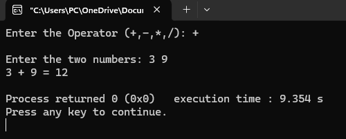

#include < stdio.h >
#include < stdlib.h >
int main() {
// two number
int x, y;
// Variable that select operation to perform
// i.e. switch variable
char choice;
// Take input
printf("Enter the Operator (+,-,*,/): " );
scanf(" %c", &choice);
printf("\nEnter the two numbers: ");
scanf("%d %d", &x, &y);
// switch case with operation for each operator
switch (choice) {
case '+':
printf("%d + %d = %d\n", x, y, x + y);
break;
case '-':
printf("%d - %d = %d\n", x, y, x - y);
break;
case '*':
printf("%d * %d = %d\n", x, y, x * y);
break;
case '/':
printf("%d / %d = %d\n", x, y, x / y);
break;
default:
printf("Invalid Operator Input\n");
}
return 0;
}
Output

Unformatted Input/Output Functions
Goto label
#include < stdio.h >
int main() {
int n = 26;
if (n % 2 == 0)
// jump to even
goto even;
else
// Jump to odd
goto odd;
even:
printf("%d is even", n);
return 0;
odd:
printf("%d is odd", n);
return 0;
}